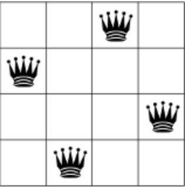
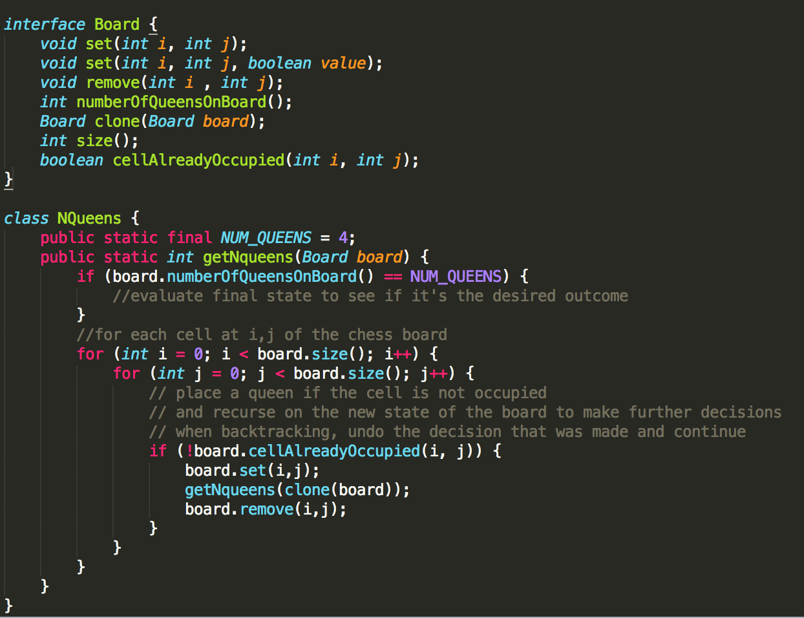
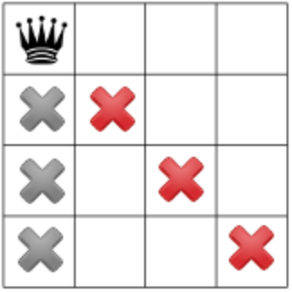

Algorithms
Decision trees, recursion, backtracking
Decision making in computer science
Computer Science is mostly about making decisions. The focus here, however, will be on a particular problem solving approach in which we have the option of taking a number of decisions at a time. Each set of decisions will lead to a particular outcome. One goal might be to analyse which combination of decisions leads to the desired outcome.
For exmaple: There are 4 queens and a 4x4 chess board, The goal is to place the 4 queens on the board such that the queens do not attack each other. There are a number of ways this can happen, so let's find all of them.
For this problem, the first decision is to place the first queen somewhere on the empty chess board - Let's call this decision d1. There are a number of options here(The queen can be placed on any one of the 16 cells on the board). Now, given the first decision is made, There are now 15 choices for placing the second queen. 2 more successive decisions will need to be made to have all the four queens on the board. At this point, we can start to evaluate if the set of decisions we made led us to the intended outcome - do the 4 queens placed on the board attack each other. If not, we can undo our last decision, d4, and place the 4th queen somewhere else on the board and see if it's the right outcome and so on.
A few terms to keep in mind here
- Every decision made is on a particular state of the configuration(i.e the state of the board).
- State transitions happen as we decide where to place a queen. (Image of two different board in two different states)
- Each set of decision leads to a final state of the configuration.
Recursion and Backtracking allow us to translate this exhaustive problem solving strategy into code. Everytime we make a recursive call on a given configuration(A board and the remaining queens), we're about to make a decision on that board such as placing the remaining queen on any available cell on the board. Consequently, every time we backtrack, we have to undo the decision we made so that we can explore other options.
Look at the following code

There are a number of ways to optimize such type of decision making problems. One of potential technique is called constraint programming. In constraint programming, the idea is to narrow down the number of decisions we make on the next state of a configuration based on what we know about the current state of a configuration.
For example, if we place the first queen on the top left corner of the chess board, we should avoid placing the next queen on any of the crossed out cells shown below since that will lead to the two queens attacking each other.

Sometimes, throughout the algorithm, we might encounter a configuration in a state we have seen before and we might find ourselves about to make the same set of decisions on that configuration. To optimize such situations, we can save the result of making a decision on a particular state of a configuration, so that the next time we encounter the same state, we would know the solution without having to do additional work.